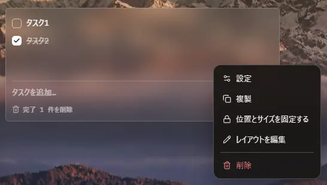

更新履歴
v0.3.0
タスクリストや最近閉じたタブなどのウィジェットが増え、検索・リンク集・背景がもっと手軽に使えるようになりました。

新しいウィジェット
- ToDo: チェックを付けて消していくタスクリストです。完了したタスクは下にまとまり、まとめて削除できます。
- 最近閉じたタブ: 最近閉じたタブやウィンドウを、クリックひとつで開き直せます。
新しい機能
- 検索ウィジェットで、前に検索した言葉が候補として出るようになりました。検索履歴はこの端末の中にだけ保存されます。
- リンク集で URL を入力すると、表示名とアイコンが自動で入るようになりました。
- 背景画像をスライドショーにできるようになりました。新しいタブを開くたび、または決めた間隔で切り替わります。
- レイアウトの保存に件数の上限がなくなり、名前を付けて管理できるようになりました。
- 9 つの言語（日本語・英語・中国語［簡体字・繁体字］・韓国語・スペイン語・フランス語・ドイツ語・ポルトガル語［ブラジル］）に対応しました。
- アップデートしたときに、新しいタブでお知らせするようになりました。
使いやすさの改善
- ウィジェットを右クリックして、設定・複製・削除などができるようになりました。
- ウィジェットをロックして、うっかり動かしてしまうのを防げるようになりました。
- 編集モード以外でも、直前の操作を元に戻せる（Undo）ようになりました。
- ウィジェットの追加パネルがカテゴリ別になり、名前で検索できるようになりました。
- 見た目の設定がテーマのプリセットから選べるようになり、細かい数値は「詳細設定」にまとめました。
- 設定のバックアップ（JSON の書き出し・読み込み）を、新しいタブのサイドパネルからできるようになりました。
- ウィジェットの設定を「内容」と「見た目」の 2 つのタブに分けました。
- リンク集のアイコンの大きさ・リンク名の表示・1 行に並べる数、メモの Markdown 表示、天気の更新間隔、RSS の日付表示を設定できるようになりました。
不具合の修正
- 明るいテーマで、ツールバーの文字やリンク集の SVG アイコンが見えにくかった問題を修正しました。